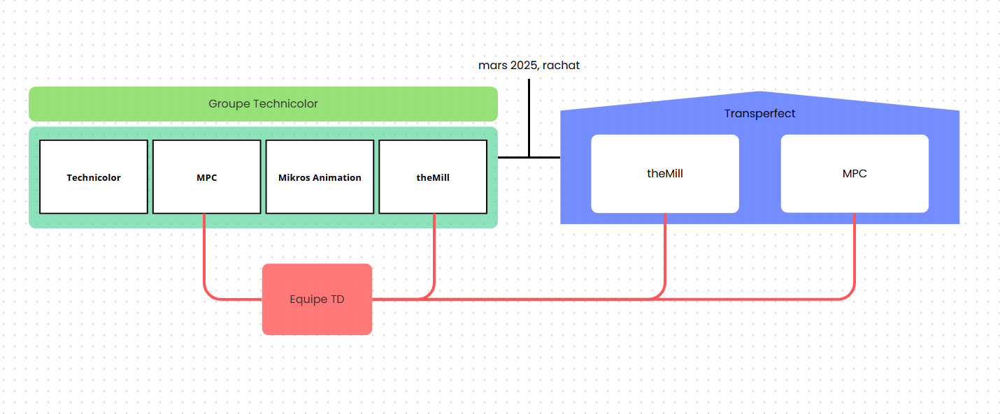
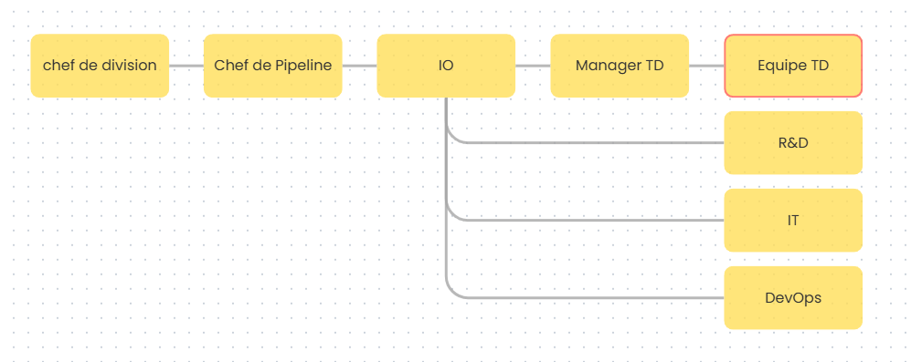

Structure de l'entreprise


Activité de l'entreprise
TheMill/MPC sont deux entreprises spécialisées dans le vfx (effets spéciaux), rachetées en mars 2025 par l'entreprise Transperfect. Les deux sont des entreprises de renommée mondiale, TheMill dans le secteur publicitaire et MPC dans les longs métrages. Nous signons des contrats avec des producteurs variés pour intervenir de façon plus ou moins importante selon les contrats dans le processus de réalisation d'effets spéciaux de leurs productions. L'entreprise est donc majoritairement composée de graphistes mais aussi d'agents commerciaux, d'IT, de développeurs, devOps, etc. Jusqu'en mars 2025 l'entreprise avait été rachetée par Technicolor et était devenue le groupe technicolor, en mars 2025, l'entreprise est passée en redressement judiciaire, elle a fermée aux états-unis, en belgique et en inde, seule la partie française et londonienne de l'entreprise reste en activité. Les entreprises techicolor et mikros animation ont été dissoutes ce qui a fait de TheMill/MPC les 2 seules entreprises restantes, rachetées par Transperfect.
Activité personnelle au sein de l'entreprise
J'occupe le post d'apprenti Technical Director au sein de l'entreprise, dans l'équipe des TD, regroupés avec la CoreTech, la R&D et les devOps. Nous nous occupons de la création et maintenance d'outils afin d'aider artistes et développeurs pour être plus efficaces dans notre travail. Pour l'instant j'ai conçus des outils servant à raccourcir les tâches de base des développeurs (clônage/initialisation/clear/statistiques des packages) et pour simplifier le setup d'environnements. Pour ce qui est des artistes j'ai créé un builder de menus pour nuke, houdini, maya et autres logiciels à venir (blender par exemple), un sanitycheck pour nuke et maya qui permet aux artistes de vérifier automatiquement s'ils n'ont rien de bloquant dans leur scène avant de l'envoyer en production. J'ai participé à la création d'un wrapper de Qt qui nous permet de créer nos propres widgets pour avoir une interface "maison" sur tous nos packages et surtout qui facilite la création d'ui côté dev. Mon dernier projet est la création d'une toolbox contenant tous les scripts créés par les artistes eux même, qui peuvent les aider selon les prods. D'un autre côté, je fais également du support de base (mise à jour d'une prod/d'un package sur une prod, création des dossiers nécessaires à une prod, suppression de cache bloquant pour un utilisateur, mise à jour de droits...).